Diseños Factoriales Fraccionados \(2^{k-p}\)
Introducción
Son los diseños en los que se elige adecuadamente una parte o fracción de los tratamientos de un factorial completo, con la intención de estudiar el efecto de los factores utilizando menos corridas experimentales.
Cuando crece el número de factores también aumenta rápidamente el número de tratamientos en los diseños factoriales completos \(2^k\). Por ejemplo, para \(k = 6\) factores, una sola réplica del diseño factorial completo \(2^6\) implica correr 64 pruebas, que corresponden al número de tratamientos del diseño; para \(k = 7\) son \(2^7\) = 128 puntos de diseño.
Gracias al exceso de información que acumulan los diseños factoriales completos cuando se estudian muchos factores, los diseños factoriales fraccionados permiten sacrificar información poco importante en aras de un diseño manejable en cuanto al número de corridas experimentales.
Los diseños factoriales fraccionarios usan sólo la mitad, la cuarta parte o incluso una fracción menor de las \(2^k\) combinaciones de tratamientos y se usan por una o varias de las siguientes razones:
El número de tratamientos necesario excede a los recursos
Sólo se requiere información sobre los efectos principales y las interacciones de bajo orden
Se necesitan estudios exploratorios para muchos factores
Se hace la suposición de que sólo unos cuantos efectos son importantes
La notación del diseño factorial fraccionado es \(2^{k-p}\) donde \(p\) es la fracción que se desprecia en el diseño el cual depende del número de factores tenidos en cuenta:
\[2^{3-1}=\frac{1}{2^1}2^3=4\] \[2^{5-2}=\frac{1}{2^2}2^5=8\] \[2^{15-8}=\frac{1}{2^8}2^{15}=128\]
Entre más grande sea \(k\) el diseño permitirá un grado mayor de fraccionamiento, además aplicar este método significa que habrán efectos que son ignorables en la estimación.
| Diseño | Efectos totales | Efectos no ignorables | Efectos ignorables |
|---|---|---|---|
| \(2^2\) | 3 | 3 | 0 |
| \(2^3\) | 7 | 6 | 1 |
| \(2^4\) | 15 | 10 | 5 |
| \(2^5\) | 31 | 15 | 16 |
| \(2^6\) | 63 | 21 | 42 |
| \(2^7\) | 127 | 28 | 99 |
Por otra parte, al correr una fracción del diseño ocurrirán las siguientes situaciones:
Se pierde información, ya que habrá efectos que no podrán estimarse y se tienen menos grados de libertad disponibles para el error. Los efectos que se pierden se espera que sean, en la medida de lo posible, interacciones de alto orden, las cuales se pueden ignorar de antemano con bajo riesgo.
Los efectos que sí se pueden estimar tienen al menos un alias. El que un efecto sea alias de otro significa que en realidad son el mismo efecto con nombres distintos, y al estimar a uno de ellos al mismo tiempo se estima el otro, de manera que no se pueden separar. Cuando el experimentador elige una fracción en la que dos efectos potencialmente importantes son alias, debe contar de antemano con una estrategia de interpretación del efecto estimado.
Diseño \(2^{k-1}\)
La notación \(2^{k–1}\) significa una fracción a la mitad del diseño factorial completo \(2^k\), \(k > 2\) con \(\frac{1}{2} 2^k = 2^{k – 1}\). No tiene sentido fraccionar el diseño factorial \(2^2\) porque prácticamente desaparece: al tener sólo cuatro tratamientos, fraccionarlo a la mitad implicaría correr dos tratamientos y con ellos no se podrían estimar ni siquiera los dos efectos principales.
Diseño \(2^{3-1}\)
En este diseño se pasa de evaluar 8 corridas a 4, es decir, se fracciona a la mitad. Es claro que en el diseño factorial \(2^3\) completo se pueden estimar los efectos \(A\), \(B\), \(C\), \(AB\), \(AC\), \(BC\), \(ABC\). La idea de fraccionar un diseño es sacrificar el efecto más despreciable de acuerdo con la jerarquía, en este caso el efecto \(ABC\) es el mejor candidato.
| A | B | C | AB | AC | BC | ABC | Yates |
|---|---|---|---|---|---|---|---|
| -1 | -1 | -1 | 1 | 1 | 1 | -1 | \((1)\) |
| 1 | -1 | -1 | -1 | -1 | 1 | 1 | \(a\) |
| -1 | 1 | -1 | -1 | 1 | -1 | 1 | \(b\) |
| 1 | 1 | -1 | 1 | -1 | -1 | -1 | \(ab\) |
| -1 | -1 | 1 | 1 | -1 | -1 | 1 | \(c\) |
| 1 | -1 | 1 | -1 | 1 | -1 | -1 | \(ac\) |
| -1 | 1 | 1 | -1 | -1 | 1 | -1 | \(bc\) |
| 1 | 1 | 1 | 1 | 1 | 1 | 1 | \(abc\) |
Entonces la fracción depende de los signos del contraste \(ABC\), la fracción principal es aquella que se conforman con los signos \(+\), y la fracción complementaria es la que se conforma con los signos \(-\).
|
Fracción Principal (\(I=+ABC\)) |
Fracción complementaria (\(I=-ABC\)) |
||||||
|---|---|---|---|---|---|---|---|
| A | B | C | Yates | A | B | C | Yates |
| 1 | -1 | -1 | \(a\) | -1 | -1 | -1 | \((1)\) |
| -1 | 1 | -1 | \(b\) | 1 | 1 | -1 | \(ab\) |
| -1 | -1 | 1 | \(c\) | 1 | -1 | 1 | \(ac\) |
| 1 | 1 | 1 | \(abc\) | -1 | 1 | 1 | \(bc\) |
La relación definidora \(I=+ABC\) es la que define la estructura del alias, el cual enmascara los contraste de los efectos, por ejemplo el contraste del efecto \(A\) está dado por:
\[\text{Contraste }A=(a+abc-b-c)\]
Cuando se multiplican las columnas \(B\times C\) se obtiene:
\[\text{Contraste }BC=(a+abc-b-c)\]
Obeserve que \(A=BC\) lo que significa que los efectos \(A\) y \(BC\) son alias. Al estimar el efecto \(A\) también se estima el efecto \(BC\). Así, en realidad se estima la suma \(A + BC\) de ambos efectos y no se sabe con certeza cuál es el que predomina o si ambos afectan.
\[\text{Contraste }B=\text{Contraste }AC=(b+abc-a-c)\] \[\text{Contraste }C=\text{Contraste }AB=(c+abc-b-a)\]
En resumen, la estructura del alias del diseño factorial fraccionado \(2^{3–1}\) está dada por \(A + BC\), \(B + AC\), \(C + AB\). Otra forma de obtener la estructura alias de un diseño factorial fraccionado es con la relación definidora del diseño.
\[A \times I = A\times ABC=A^2BC=BC\] \[B \times I = B\times ABC=AB^2C=AC\] \[C \times I = C\times ABC=ABC^2=AB\]
Para interpretar los efectos alias o aliados es necesario suponer que sólo uno de ellos es responsable del efecto observado y que los demás efectos son nulos. Por ejemplo, si se utilizara el diseño \(2^{3–1}\) con la estructura de alias, los efectos alias se interpretan atribuyendo (por jerarquía) el efecto observado al efecto principal de cada grupo y considerando nulas las interacciones dobles.
Comúnmente resulta bastante riesgoso suponer a priori que las interacciones dobles no afectan, de aquí que no se recomienda utilizar este diseño, a menos que el costo experimental no permita correr el factorial completo.
En general no es buena estrategia utilizar diseños fraccionados donde se alían dos efectos que son potencialmente importantes, como son los efectos principales y las interacciones dobles
El concepto de Resolución
Los diseños factoriales fraccionados se agrupan en clases de acuerdo con las relaciones de aleatorización que existen en el diseño, estos grupos se identifican por su resolución. Los diseños más comunes son aquellos con resolución \(III\), \(IV\) y \(V\).
Resolución \(III\): diseño en el que ningún efecto principal se confunde con otro efecto principal, pero los efectos principales se confunden con interacciones de dos factores y éstas con otras interacciones de dos factores. Por ejemplo el diseño \(2^{3-1}\) con indicadora \(I=+ABC\) es de resolución \(III\).
Resolución \(IV\): diseño en el que ningún efecto principal se confunde con otro efecto principal o con una interacción de dos factores, pero éstos se confunden entre si. Por ejemplo el diseño \(2^{4-1}\) con indicadora \(I=+ABCD\) es de resolución \(IV\).
Resolución \(V\): diseño en el que ningún efecto principal ni interacción de dos factores se confunde con otro efecto principal o interacción de dos factores, pero estas últimas se confunden con las interacciones de tres factores. Por ejemplo el diseño \(2^{5-1}\) con indicadora \(I=+ABCDE\) es de resolución \(IV\).
En general, un diseño factorial fraccionado \(2^{k–p}\) es una fracción \(1/2^p\) del diseño factorial completo \(2^k\). Para construir un diseño \(2^{k–p}\) se eligen p generadores iniciales, todos interacciones del más alto orden posible, de manera que todos sus productos también sean interacciones de alto orden. Una vez elegidos los \(p\) generadores el diseño se puede construir en dos pasos.
Se escribe el diseño \(2^{k–p}\) como si fuera el factorial completo para \(k–p\) factores, i.e \(2^{7-2}=2^5\).
Para los últimos \(p\) factores las columnas de signos se obtienen multiplicando las columnas que indican los generadores.
Diseño \(2^{k-p}\)
La relación definidora tiene tantos términos como productos se puedan hacer con los \(p\) generadores. De la relación definidora se obtiene la estructura de alias y la resolución de la fracción resultante. En todo el procedimiento descrito quizá lo más difícil es encontrar los mejores generadores de la fracción que se desea utilizar. Por fortuna, existen tablas de diseños factoriales fraccionados que incluyen su es tructura de alias, lo que permite al investigador elegir el diseño, y saber con anticipación cuáles serían los alias de los efectos potencialmente importantes.
En R con el paquete FrF2 se pueden contruir los diseños fraccionados de cualquier orden de forma sencilla, además tiene 3099 diseños fraccionados posibles, desde 3 factores hasta 65.
require(FrF2)
# Primeros 10 diseños fraccionados
print(FrF2::catlg[1:10],gen.letters = T,show.alias = T)## Design: 3-1.1
## 4 runs, 3 factors,
## Resolution III
## Generating columns: AB
## WLP (3plus): 1 0 0 0 0 , 0 clear 2fis
## Alias structure:
## Main effects aliasing:
## [1] A=BC B=AC C=AB
## 2fi aliasing:
## character(0)
##
## Design: 4-1.1
## 8 runs, 4 factors,
## Resolution IV
## Generating columns: ABC
## WLP (3plus): 0 1 0 0 0 , 0 clear 2fis
## Alias structure:
## 2fi aliasing:
## [1] AB=CD AC=BD AD=BC
##
## Design: 4-1.2
## 8 runs, 4 factors,
## Resolution III
## Generating columns: AB
## WLP (3plus): 1 0 0 0 0 , 3 clear 2fis
## Factors with all 2fis clear: C
## Alias structure:
## Main effects aliasing:
## [1] A=BD B=AD D=AB
## 2fi aliasing:
## character(0)
##
## Design: 5-2.1
## 8 runs, 5 factors,
## Resolution III
## Generating columns: AB AC
## WLP (3plus): 2 1 0 0 0 , 0 clear 2fis
## Alias structure:
## Main effects aliasing:
## [1] A=BD=CE B=AD C=AE D=AB E=AC
## 2fi aliasing:
## [1] BC=DE BE=CD
##
## Design: 6-3.1
## 8 runs, 6 factors,
## Resolution III
## Generating columns: AB AC BC
## WLP (3plus): 4 3 0 0 0 , 0 clear 2fis
## Alias structure:
## Main effects aliasing:
## [1] A=BD=CE B=AD=CF C=AE=BF D=AB=EF E=AC=DF F=BC=DE
## 2fi aliasing:
## [1] AF=BE=CD
##
## Design: 7-4.1
## 8 runs, 7 factors,
## Resolution III
## Generating columns: AB AC BC ABC
## WLP (3plus): 7 7 0 0 1 , 0 clear 2fis
## Alias structure:
## Main effects aliasing:
## [1] A=BD=CE=FG B=AD=CF=EG C=AE=BF=DG D=AB=CG=EF E=AC=BG=DF F=AG=BC=DE G=AF=BE=CD
## 2fi aliasing:
## character(0)
##
## Design: 5-1.1
## 16 runs, 5 factors,
## Resolution V
## Generating columns: ABCD
## WLP (3plus): 0 0 1 0 0 , 10 clear 2fis
## Design: 5-1.2
## 16 runs, 5 factors,
## Resolution IV
## Generating columns: ABC
## WLP (3plus): 0 1 0 0 0 , 4 clear 2fis
## Factors with all 2fis clear: D
## Alias structure:
## 2fi aliasing:
## [1] AB=CE AC=BE AE=BC
##
## Design: 5-1.3
## 16 runs, 5 factors,
## Resolution III
## Generating columns: AB
## WLP (3plus): 1 0 0 0 0 , 7 clear 2fis
## Factors with all 2fis clear: C D
## Alias structure:
## Main effects aliasing:
## [1] A=BE B=AE E=AB
## 2fi aliasing:
## character(0)
##
## Design: 6-2.1
## 16 runs, 6 factors,
## Resolution IV
## Generating columns: ABC ABD
## WLP (3plus): 0 3 0 0 0 , 0 clear 2fis
## Alias structure:
## 2fi aliasing:
## [1] AB=CE=DF AC=BE AD=BF AE=BC AF=BD CD=EF CF=DE# Construyendo un diseño 2^(5-1) resolución V
args(FrF2)## function (nruns = NULL, nfactors = NULL, factor.names = if (!is.null(nfactors)) {
## if (nfactors <= 50)
## Letters[1:nfactors]
## else paste("F", 1:nfactors, sep = "")
## } else NULL, default.levels = c(-1, 1), ncenter = 0, center.distribute = NULL,
## generators = NULL, design = NULL, resolution = NULL, select.catlg = catlg,
## estimable = NULL, clear = TRUE, method = "VF2", sort = "natural",
## ignore.dom = !isTRUE(all.equal(blocks, 1)), useV = TRUE,
## firsthit = FALSE, res3 = FALSE, max.time = 60, perm.start = NULL,
## perms = NULL, MaxC2 = FALSE, replications = 1, repeat.only = FALSE,
## randomize = TRUE, seed = NULL, alias.info = 2, blocks = 1,
## block.name = "Blocks", block.old = FALSE, force.godolphin = FALSE,
## bbreps = replications, wbreps = 1, alias.block.2fis = FALSE,
## hard = NULL, check.hard = 10, WPs = 1, nfac.WP = 0, WPfacs = NULL,
## check.WPs = 10, ...)
## NULLFrF2(nruns = 2^4,nfactors = 5,randomize = F,replications = 1,generators = "ABCD")## A B C D E
## 1 -1 -1 -1 -1 1
## 2 1 -1 -1 -1 -1
## 3 -1 1 -1 -1 -1
## 4 1 1 -1 -1 1
## 5 -1 -1 1 -1 -1
## 6 1 -1 1 -1 1
## 7 -1 1 1 -1 1
## 8 1 1 1 -1 -1
## 9 -1 -1 -1 1 -1
## 10 1 -1 -1 1 1
## 11 -1 1 -1 1 1
## 12 1 1 -1 1 -1
## 13 -1 -1 1 1 1
## 14 1 -1 1 1 -1
## 15 -1 1 1 1 -1
## 16 1 1 1 1 1
## class=design, type= FrF2.generatorsFrF2(nruns = 2^4,nfactors = 5,randomize = F,replications = 1,design = "5-1.1")## A B C D E
## 1 -1 -1 -1 -1 1
## 2 1 -1 -1 -1 -1
## 3 -1 1 -1 -1 -1
## 4 1 1 -1 -1 1
## 5 -1 -1 1 -1 -1
## 6 1 -1 1 -1 1
## 7 -1 1 1 -1 1
## 8 1 1 1 -1 -1
## 9 -1 -1 -1 1 -1
## 10 1 -1 -1 1 1
## 11 -1 1 -1 1 1
## 12 1 1 -1 1 -1
## 13 -1 -1 1 1 1
## 14 1 -1 1 1 -1
## 15 -1 1 1 1 -1
## 16 1 1 1 1 1
## class=design, type= FrF2FrF2(nfactors = 5,randomize = F,replications = 1,resolution = 5)## A B C D E
## 1 -1 -1 -1 -1 1
## 2 1 -1 -1 -1 -1
## 3 -1 1 -1 -1 -1
## 4 1 1 -1 -1 1
## 5 -1 -1 1 -1 -1
## 6 1 -1 1 -1 1
## 7 -1 1 1 -1 1
## 8 1 1 1 -1 -1
## 9 -1 -1 -1 1 -1
## 10 1 -1 -1 1 1
## 11 -1 1 -1 1 1
## 12 1 1 -1 1 -1
## 13 -1 -1 1 1 1
## 14 1 -1 1 1 -1
## 15 -1 1 1 1 -1
## 16 1 1 1 1 1
## class=design, type= FrF2Ejemplo
En una planta donde se fabrican semiconductores se quiere mejorar el rendimiento del proceso vía diseño de experimentos. De acuerdo con la experiencia del grupo de mejora, los factores que podrían tener mayor influencia sobre la variable de respuesta (rendimiento), así como los niveles de prueba utilizados son los siguientes:
| Factor | Niveles |
|---|---|
| A | Nivel de la abertura (pequeña, grande) |
| B | Tiempo de exposición (20% abajo, 20% arriba) |
| C | Tiempo de revelado (30 seg, 45 seg) |
| D | Dimensión de la máscara (pequeña, grande) |
| E | Tiempo de grabado (14.5 min, 15.5 min) |
Se decide correr un experimento \(2^5\) con una sola corrida o réplica para estudiar esto cinco factores. Estos son los resultados
| A | B | C | D | E | y | Yates |
|---|---|---|---|---|---|---|
| -1 | -1 | -1 | -1 | -1 | 7 | (1) |
| 1 | -1 | -1 | -1 | -1 | 9 | a |
| -1 | 1 | -1 | -1 | -1 | 34 | b |
| 1 | 1 | -1 | -1 | -1 | 55 | ab |
| -1 | -1 | 1 | -1 | -1 | 16 | c |
| 1 | -1 | 1 | -1 | -1 | 20 | ac |
| -1 | 1 | 1 | -1 | -1 | 40 | bc |
| 1 | 1 | 1 | -1 | -1 | 60 | abc |
| -1 | -1 | -1 | 1 | -1 | 8 | d |
| 1 | -1 | -1 | 1 | -1 | 10 | ad |
| -1 | 1 | -1 | 1 | -1 | 32 | bd |
| 1 | 1 | -1 | 1 | -1 | 50 | abd |
| -1 | -1 | 1 | 1 | -1 | 18 | cd |
| 1 | -1 | 1 | 1 | -1 | 21 | acd |
| -1 | 1 | 1 | 1 | -1 | 44 | bcd |
| 1 | 1 | 1 | 1 | -1 | 61 | abcd |
| -1 | -1 | -1 | -1 | 1 | 18 | e |
| 1 | -1 | -1 | -1 | 1 | 12 | ae |
| -1 | 1 | -1 | -1 | 1 | 35 | be |
| 1 | 1 | -1 | -1 | 1 | 52 | abe |
| -1 | -1 | 1 | -1 | 1 | 15 | ce |
| 1 | -1 | 1 | -1 | 1 | 22 | ace |
| -1 | 1 | 1 | -1 | 1 | 45 | bce |
| 1 | 1 | 1 | -1 | 1 | 65 | abce |
| -1 | -1 | -1 | 1 | 1 | 6 | de |
| 1 | -1 | -1 | 1 | 1 | 10 | ade |
| -1 | 1 | -1 | 1 | 1 | 30 | bde |
| 1 | 1 | -1 | 1 | 1 | 53 | abde |
| -1 | -1 | 1 | 1 | 1 | 15 | cde |
| 1 | -1 | 1 | 1 | 1 | 20 | acde |
| -1 | 1 | 1 | 1 | 1 | 41 | bcde |
| 1 | 1 | 1 | 1 | 1 | 63 | abcde |
Modelo completo
Para realizar el análisis estadístico de este diseño factorial (\(2^5\)), los pasos a seguir son los siguientes:
- Cargar/Construir la base de datos con la información de interés.
- Realizar un análisis descriptivo de la información.
- Ajustar el modelo a través del ANOVA.
- Validar los supuestos del modelo.
- Realizar las pruebas post-hoc.
Necesitamos las siguientes librerías.
# Para establecer el diseño
require(FrF2)
require(DoE.base)
# Para gráficos con estilo
require(ggplot2)
# Para manejar bases de datos
require(dplyr)
# Para construir los qq-plots
require(car)
# Para las pruebas de normalidad
require(nortest)
# Para evaluar las interacciones
require(phia)
# Para los gráficos Pareto
require(pid)
# Para las pruebas post-hoc
require(agricolae)
require(multcomp)El primer paso es cargar o construir la base de datos, esto puede hacerse en excel y luego importarlas a R o se puede construir la base de datos de la siguiente forma:
desig <- FrF2(32,5,randomize = F)
y <- c(7,9,34,55,16,20,40,60,
8,10,32,50,18,21,44,61,
18,12,35,52,15,22,45,65,
6,10,30,53,15,20,41,63)
desig <- add.response(desig,y)
desig## A B C D E y
## 1 -1 -1 -1 -1 -1 7
## 2 1 -1 -1 -1 -1 9
## 3 -1 1 -1 -1 -1 34
## 4 1 1 -1 -1 -1 55
## 5 -1 -1 1 -1 -1 16
## 6 1 -1 1 -1 -1 20
## 7 -1 1 1 -1 -1 40
## 8 1 1 1 -1 -1 60
## 9 -1 -1 -1 1 -1 8
## 10 1 -1 -1 1 -1 10
## 11 -1 1 -1 1 -1 32
## 12 1 1 -1 1 -1 50
## 13 -1 -1 1 1 -1 18
## 14 1 -1 1 1 -1 21
## 15 -1 1 1 1 -1 44
## 16 1 1 1 1 -1 61
## 17 -1 -1 -1 -1 1 18
## 18 1 -1 -1 -1 1 12
## 19 -1 1 -1 -1 1 35
## 20 1 1 -1 -1 1 52
## 21 -1 -1 1 -1 1 15
## 22 1 -1 1 -1 1 22
## 23 -1 1 1 -1 1 45
## 24 1 1 1 -1 1 65
## 25 -1 -1 -1 1 1 6
## 26 1 -1 -1 1 1 10
## 27 -1 1 -1 1 1 30
## 28 1 1 -1 1 1 53
## 29 -1 -1 1 1 1 15
## 30 1 -1 1 1 1 20
## 31 -1 1 1 1 1 41
## 32 1 1 1 1 1 63
## class=design, type= full factorialEfectos del diseño
plot(desig)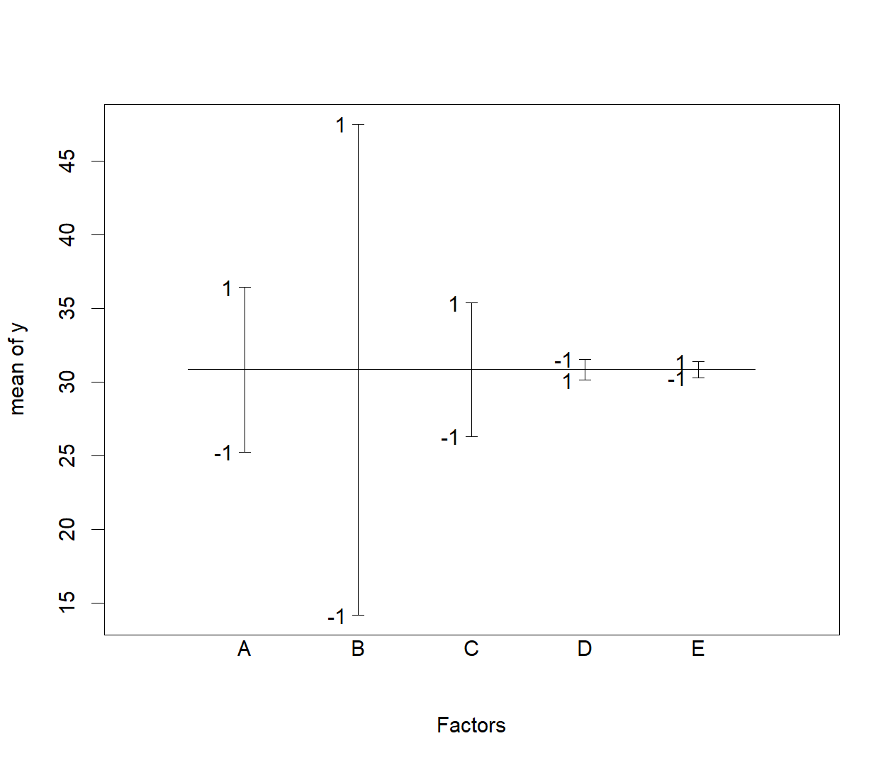
MEPlot(desig)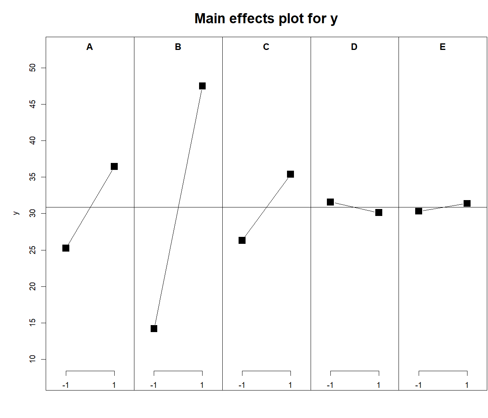
#install.packages("unrepx")
require(unrepx)
yates(desig$y,letters)## a b ab c ac bc abc d ad bd
## 11.1875 33.3125 8.5625 9.0625 1.0625 0.6875 -1.0625 -1.4375 0.5625 -0.0625
## abd cd acd bcd abcd e ae be abe ce
## -0.3125 1.4375 -1.0625 -0.1875 0.5625 1.0625 0.3125 -0.0625 0.4375 -0.3125
## ace bce abce de ade bde abde cde acde bcde
## 0.9375 1.5625 -0.4375 -1.8125 1.4375 0.8125 0.3125 -0.1875 -0.9375 -1.5625
## abcde
## 0.4375
## attr(,"mean")
##
## 30.84375Análisis de varianza
require(pid)
fit <- aov(y~.^5,data = desig)
a <- paretoPlot(fit)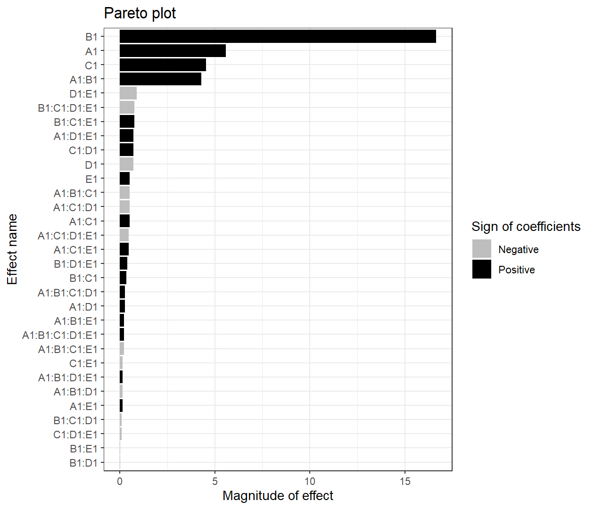
DanielPlot(fit,code = T,las=1)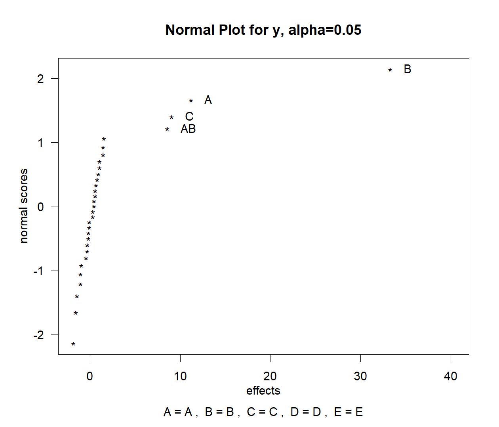
fit <- aov(y~.^2,data = desig)
a <- paretoPlot(fit)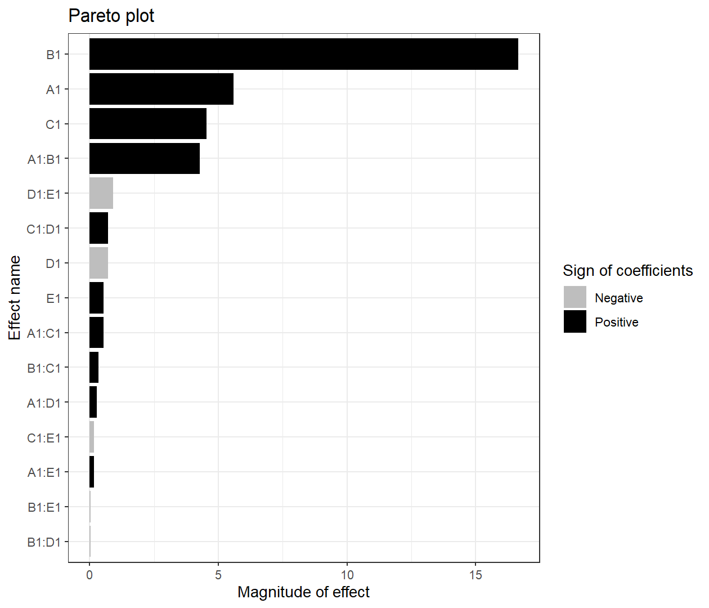
DanielPlot(fit,code = T,las=1)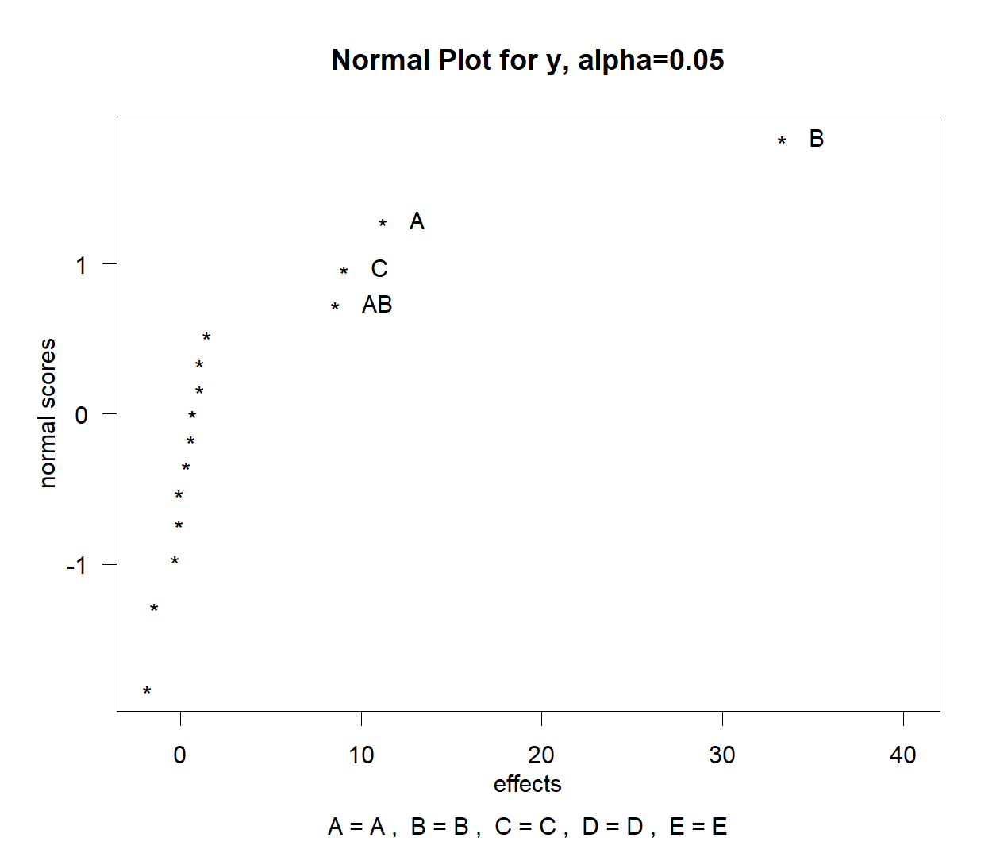
anova(fit)## Analysis of Variance Table
##
## Response: y
## Df Sum Sq Mean Sq F value Pr(>F)
## A 1 1001.3 1001.3 156.6797 1.114e-09 ***
## B 1 8877.8 8877.8 1389.1883 < 2.2e-16 ***
## C 1 657.0 657.0 102.8117 2.264e-08 ***
## D 1 16.5 16.5 2.5868 0.12731
## E 1 9.0 9.0 1.4132 0.25187
## A:B 1 586.5 586.5 91.7800 4.972e-08 ***
## A:C 1 9.0 9.0 1.4132 0.25187
## A:D 1 2.5 2.5 0.3961 0.53800
## A:E 1 0.8 0.8 0.1222 0.73117
## B:C 1 3.8 3.8 0.5917 0.45297
## B:D 1 0.0 0.0 0.0049 0.94512
## B:E 1 0.0 0.0 0.0049 0.94512
## C:D 1 16.5 16.5 2.5868 0.12731
## C:E 1 0.8 0.8 0.1222 0.73117
## D:E 1 26.3 26.3 4.1125 0.05956 .
## Residuals 16 102.3 6.4
## ---
## Signif. codes: 0 '***' 0.001 '**' 0.01 '*' 0.05 '.' 0.1 ' ' 1Mejor ajuste
fit <- aov(y~A+B+C+A:B,data = desig)
anova(fit)## Analysis of Variance Table
##
## Response: y
## Df Sum Sq Mean Sq F value Pr(>F)
## A 1 1001.3 1001.3 144.112 2.460e-12 ***
## B 1 8877.8 8877.8 1277.762 < 2.2e-16 ***
## C 1 657.0 657.0 94.565 2.577e-10 ***
## A:B 1 586.5 586.5 84.418 8.459e-10 ***
## Residuals 27 187.6 6.9
## ---
## Signif. codes: 0 '***' 0.001 '**' 0.01 '*' 0.05 '.' 0.1 ' ' 1Supuestos del modelo
qqPlot(fit$residuals,pch=19)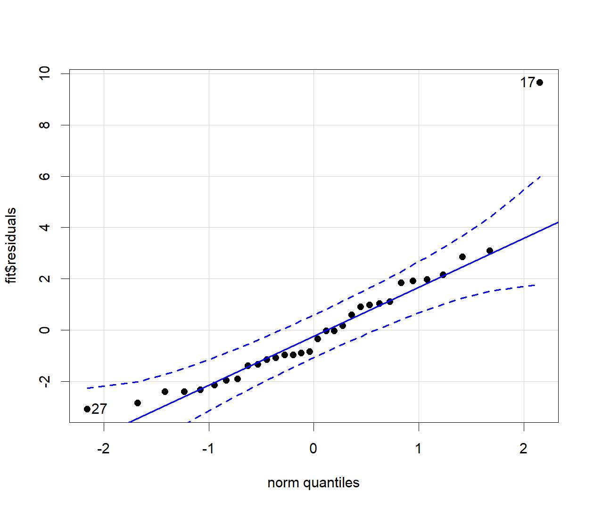
## [1] 17 27shapiro.test(fit$residuals)##
## Shapiro-Wilk normality test
##
## data: fit$residuals
## W = 0.84076, p-value = 0.0002633ad.test(fit$residuals)##
## Anderson-Darling normality test
##
## data: fit$residuals
## A = 0.95696, p-value = 0.01368lillie.test(fit$residuals)##
## Lilliefors (Kolmogorov-Smirnov) normality test
##
## data: fit$residuals
## D = 0.1342, p-value = 0.1507hist(fit$residuals,col="lightblue",las=1,freq=F,
main="Histograma de los Residuales",xlab="Residuales")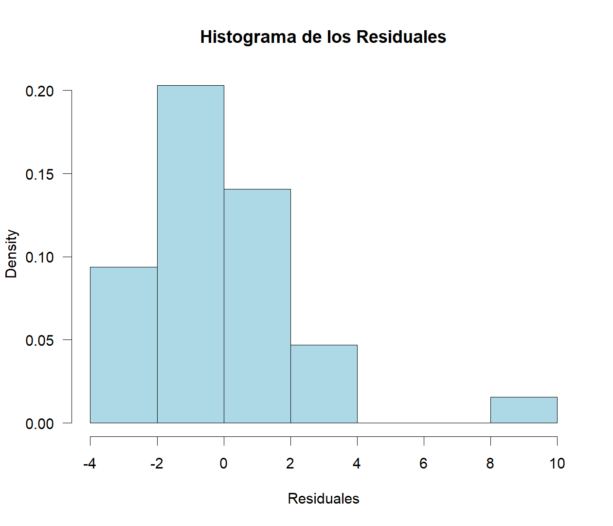
plot(predict(fit),fit$residuals,pch=19,las=1,
main="Homogeneidad de Varianza")
abline(h=0,lty=2)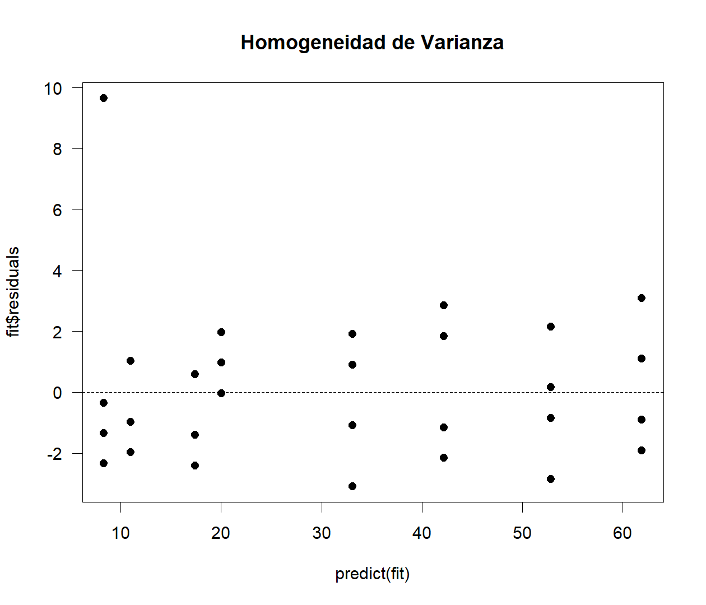
bartlett.test(fit$residuals,desig$A)##
## Bartlett test of homogeneity of variances
##
## data: fit$residuals and desig$A
## Bartlett's K-squared = 5.7045, df = 1, p-value = 0.01692bartlett.test(fit$residuals,desig$B)##
## Bartlett test of homogeneity of variances
##
## data: fit$residuals and desig$B
## Bartlett's K-squared = 1.8452, df = 1, p-value = 0.1743bartlett.test(fit$residuals,desig$C)##
## Bartlett test of homogeneity of variances
##
## data: fit$residuals and desig$C
## Bartlett's K-squared = 3.3138, df = 1, p-value = 0.0687Supuestos globales
par(mfrow=c(2,2))
plot(fit,pch=19)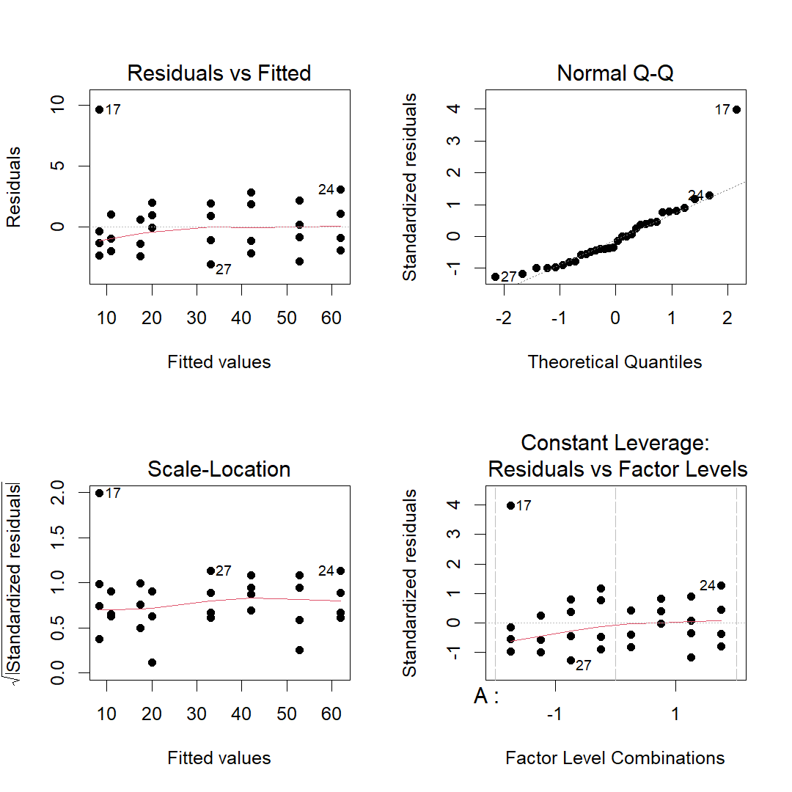
Interacción
(IM <- interactionMeans(fit))## A B C adjusted mean std. error
## 1 -1 -1 -1 8.34375 1.041927
## 2 1 -1 -1 10.96875 1.041927
## 3 -1 1 -1 33.09375 1.041927
## 4 1 1 -1 52.84375 1.041927
## 5 -1 -1 1 17.40625 1.041927
## 6 1 -1 1 20.03125 1.041927
## 7 -1 1 1 42.15625 1.041927
## 8 1 1 1 61.90625 1.041927plot(IM,las=1)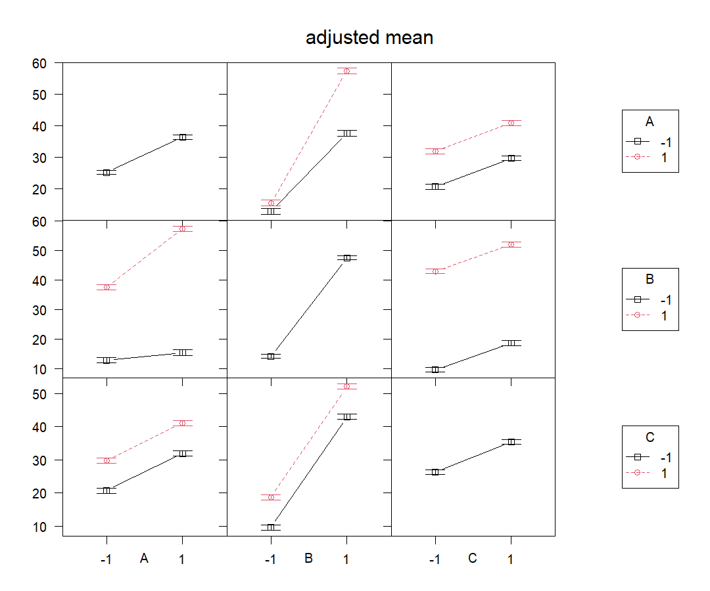
Pruebas post-hoc
lsd1 <- LSD.test(y = fit,trt = "A")
plot(lsd1,las=1,variation = "SE");grid()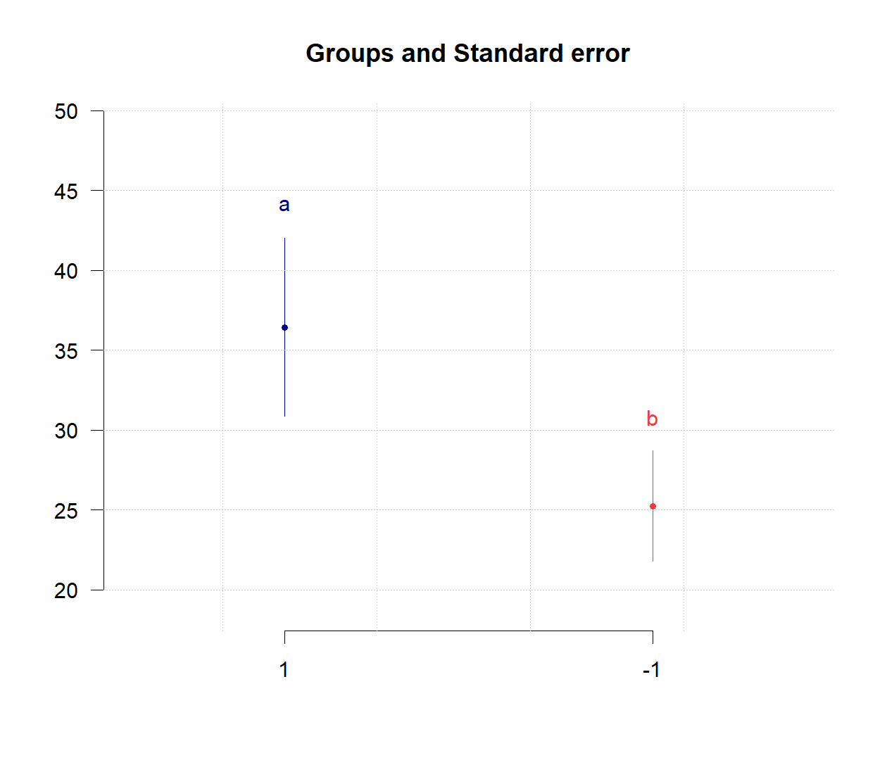
LSD.test(y = fit,trt = "A",console = T,group = F)##
## Study: fit ~ "A"
##
## LSD t Test for y
##
## Mean Square Error: 6.947917
##
## A, means and individual ( 95 %) CI
##
## y std r LCL UCL Min Max
## -1 25.2500 13.78163 16 23.8979 26.6021 6 45
## 1 36.4375 22.30088 16 35.0854 37.7896 9 65
##
## Alpha: 0.05 ; DF Error: 27
## Critical Value of t: 2.051831
##
## Comparison between treatments means
##
## difference pvalue signif. LCL UCL
## -1 - 1 -11.1875 0 *** -13.09966 -9.275342lsd2 <- LSD.test(y = fit,trt = "B")
plot(lsd2,las=1,variation = "SE");grid()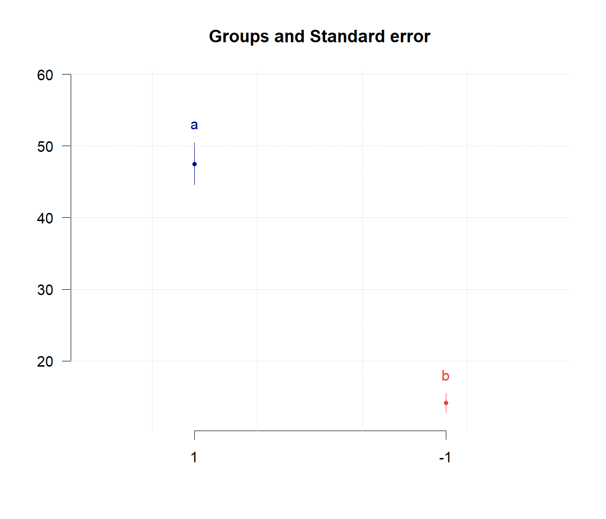
LSD.test(y = fit,trt = "B",console = T,group = F)##
## Study: fit ~ "B"
##
## LSD t Test for y
##
## Mean Square Error: 6.947917
##
## B, means and individual ( 95 %) CI
##
## y std r LCL UCL Min Max
## -1 14.1875 5.36928 16 12.8354 15.5396 6 22
## 1 47.5000 11.54701 16 46.1479 48.8521 30 65
##
## Alpha: 0.05 ; DF Error: 27
## Critical Value of t: 2.051831
##
## Comparison between treatments means
##
## difference pvalue signif. LCL UCL
## -1 - 1 -33.3125 0 *** -35.22466 -31.40034lsd3 <- LSD.test(y = fit,trt = "C")
plot(lsd3,las=1,variation = "SE");grid()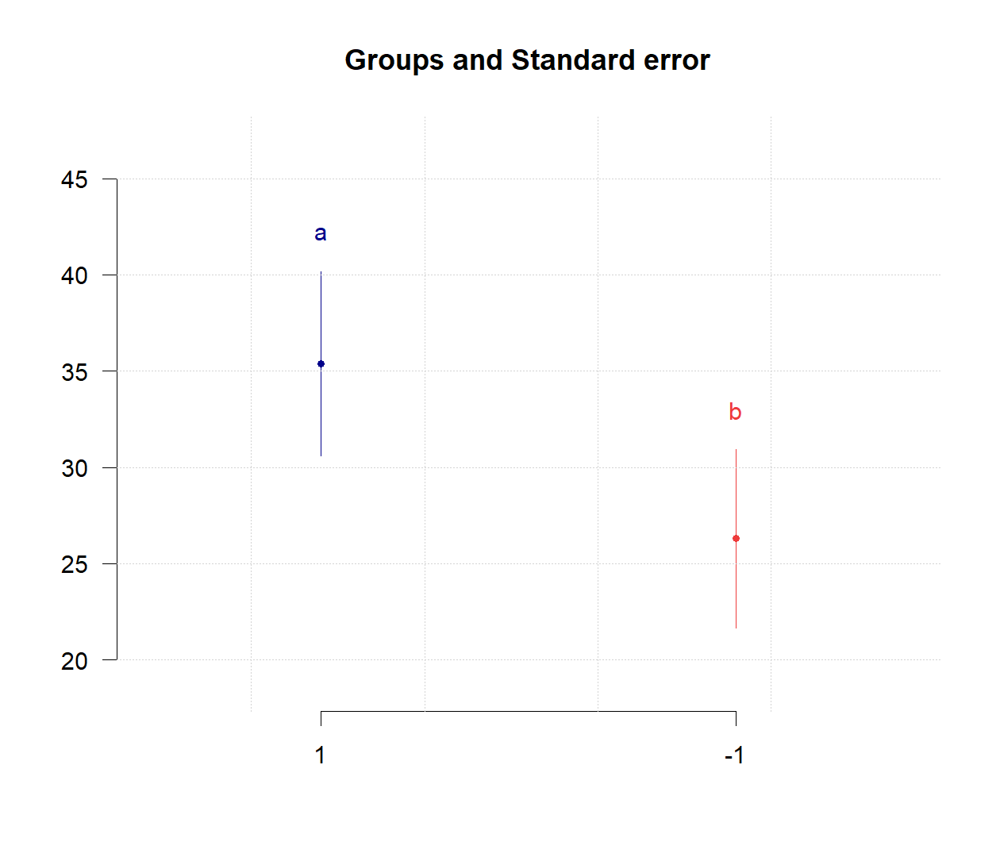
LSD.test(y = fit,trt = "C",console = T,group = F)##
## Study: fit ~ "C"
##
## LSD t Test for y
##
## Mean Square Error: 6.947917
##
## C, means and individual ( 95 %) CI
##
## y std r LCL UCL Min Max
## -1 26.3125 18.55341 16 24.9604 27.6646 6 55
## 1 35.3750 19.13069 16 34.0229 36.7271 15 65
##
## Alpha: 0.05 ; DF Error: 27
## Critical Value of t: 2.051831
##
## Comparison between treatments means
##
## difference pvalue signif. LCL UCL
## -1 - 1 -9.0625 0 *** -10.97466 -7.150342Tukey HSD
(hsd <- TukeyHSD(fit))## Tukey multiple comparisons of means
## 95% family-wise confidence level
##
## Fit: aov.default(formula = y ~ A + B + C + A:B, data = desig)
##
## $A
## diff lwr upr p adj
## 1--1 11.1875 9.275342 13.09966 0
##
## $B
## diff lwr upr p adj
## 1--1 33.3125 31.40034 35.22466 0
##
## $C
## diff lwr upr p adj
## 1--1 9.0625 7.150342 10.97466 0
##
## $`A:B`
## diff lwr upr p adj
## 1:-1--1:-1 2.625 -0.9816406 6.231641 0.2159772
## -1:1--1:-1 24.750 21.1433594 28.356641 0.0000000
## 1:1--1:-1 44.500 40.8933594 48.106641 0.0000000
## -1:1-1:-1 22.125 18.5183594 25.731641 0.0000000
## 1:1-1:-1 41.875 38.2683594 45.481641 0.0000000
## 1:1--1:1 19.750 16.1433594 23.356641 0.0000000par(mar=c(5.1,8,4.1,2.1))
plot(hsd,las=1,cex.axis=0.6)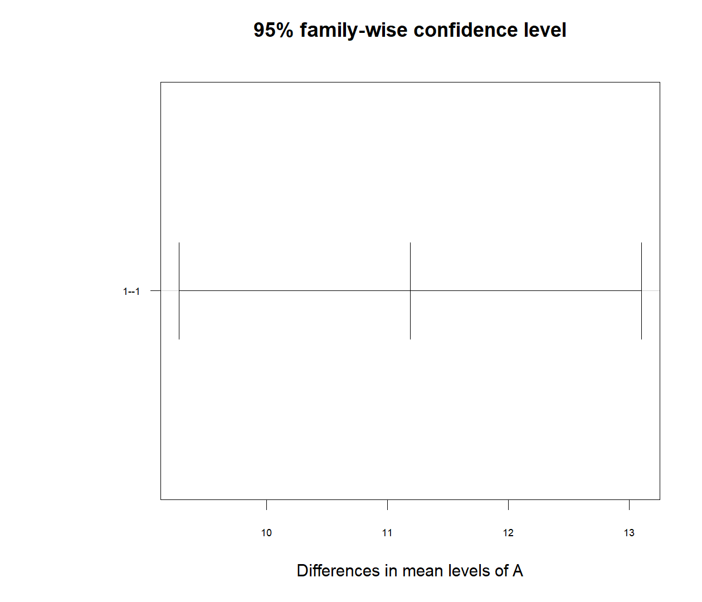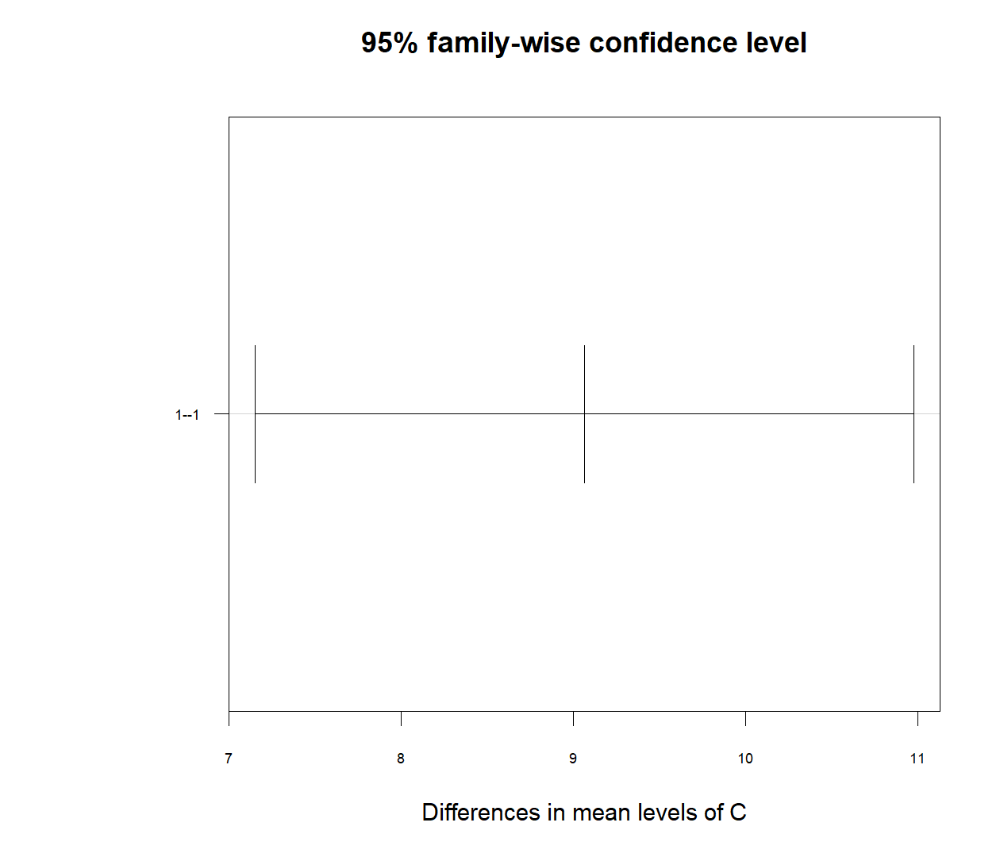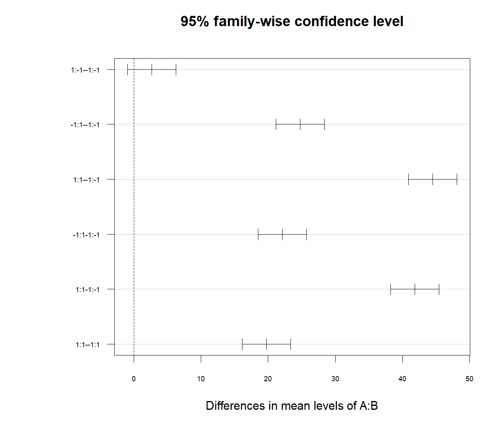
Duncan
duncan.test(y = fit,trt = "A",console = T,group = F)##
## Study: fit ~ "A"
##
## Duncan's new multiple range test
## for y
##
## Mean Square Error: 6.947917
##
## A, means
##
## y std r Min Max
## -1 25.2500 13.78163 16 6 45
## 1 36.4375 22.30088 16 9 65
##
## Comparison between treatments means
##
## difference pvalue signif. LCL UCL
## -1 - 1 -11.1875 0 *** -13.09966 -9.275342duncan.test(y = fit,trt = "B",console = T,group = F)##
## Study: fit ~ "B"
##
## Duncan's new multiple range test
## for y
##
## Mean Square Error: 6.947917
##
## B, means
##
## y std r Min Max
## -1 14.1875 5.36928 16 6 22
## 1 47.5000 11.54701 16 30 65
##
## Comparison between treatments means
##
## difference pvalue signif. LCL UCL
## -1 - 1 -33.3125 0 *** -35.22466 -31.40034duncan.test(y = fit,trt = "C",console = T,group = F)##
## Study: fit ~ "C"
##
## Duncan's new multiple range test
## for y
##
## Mean Square Error: 6.947917
##
## C, means
##
## y std r Min Max
## -1 26.3125 18.55341 16 6 55
## 1 35.3750 19.13069 16 15 65
##
## Comparison between treatments means
##
## difference pvalue signif. LCL UCL
## -1 - 1 -9.0625 0 *** -10.97466 -7.150342Modelos Fraccionados
Ahora mostraremos que si se hubiera corrido sólo una fracción a la mitad (\(2^{5–1}\)), las conclusiones hubieran sido las mismas que se obtuvieron con el factorial completo, con la diferencia de que el costo experimental hubiera sido la mitad. El objetivo de este ejemplo es mostrar que al correr una fracción a la mitad de un diseño factorial completo, con cinco factores, no se pierde (necesariamente) información valiosa y se obtienen las mismas conclusiones.
Consideremos las fracciones a la mitad para este diseño \(2^5\). La construcción de las fracciones se hace en dos pasos:
Se escribe el diseño \(2^{5–1}\) como si fuera un factorial completo \(2^4\).
La columna faltante es el producto de las cuatro primeras.
Esta fracción corresponde a la fracción principal (generador \(I = ABCDE\)). Si se toma el producto negativo de las cuatro columnas se obtiene la fracción complementaria (generador \(I = –ABCDE\)). Ambas fracciones juntas conforman el diseño factorial completo \(2^5\).
## Función para fraccionar modelos $2^k$
fractional <- function(desig,response=F,positive=T){
require(unrepx)
# Seleccionar la fracción positiva/negativa
pos <- ifelse(positive,1,-1)
# Establecer el diseño según la respuesta
if(response){
who <- which(names(desig) == response.names(desig))
desigF <- desig[,-who]
Yat <- c(1,names(yates(1:nrow(desig),letters)))
}else{
desigF <- desig
Yat <- c(1,names(yates(1:nrow(desig),letters)))
}
# validar si el modelo es fraccionable
ncols <- ncol(desigF)
if(ncols<3) stop("El modelo no es fraccionable")
nrows <- nrow(desigF)
if(2^ncols != nrows) stop("El modelo está fraccionado")
# Operaciones para fraccionar el modelo
## converir factores a números con signos
desigF <- apply(desigF,2,function(x) as.numeric(as.character(x)))
## Multiplicar los signos de los factores
desigF <- cbind(desigF,apply(desigF, 1, prod))
## Fraccionar el modelo según la selección +/-
aux <- which(desigF[,ncols+1]==pos)
desigF <- desigF[aux,1:ncols]
desigF <- data.frame(apply(desigF,2,factor),stringsAsFactors = T)
# Añadir la respuesta, si la tiene
if(response){
desigF$y <- c(unlist(desig[aux,who]))
desigF$Yates <- Yat[aux]
return(desigF)
}else{
desigF$Yates <- Yat[aux]
return(desigF)
}
}Modelo fraccionado
desF <- fractional(desig = desig,response = T,positive = F)
desF## A B C D E y Yates
## 1 -1 -1 -1 -1 -1 7 1
## 2 1 1 -1 -1 -1 55 ab
## 3 1 -1 1 -1 -1 20 ac
## 4 -1 1 1 -1 -1 40 bc
## 5 1 -1 -1 1 -1 10 ad
## 6 -1 1 -1 1 -1 32 bd
## 7 -1 -1 1 1 -1 18 cd
## 8 1 1 1 1 -1 61 abcd
## 9 1 -1 -1 -1 1 12 ae
## 10 -1 1 -1 -1 1 35 be
## 11 -1 -1 1 -1 1 15 ce
## 12 1 1 1 -1 1 65 abce
## 13 -1 -1 -1 1 1 6 de
## 14 1 1 -1 1 1 53 abde
## 15 1 -1 1 1 1 20 acde
## 16 -1 1 1 1 1 41 bcdeAnálisis de varianza
fit <- aov(y~A*B*C*D,data = desF)
a <- paretoPlot(fit)
DanielPlot(fit,code = T,las=1)
fit <- aov(y~A+B+C+A:B,data = desF)
anova(fit)## Analysis of Variance Table
##
## Response: y
## Df Sum Sq Mean Sq F value Pr(>F)
## A 1 650.2 650.2 267.39 4.580e-09 ***
## B 1 4692.2 4692.2 1929.52 1.039e-13 ***
## C 1 306.3 306.3 125.93 2.310e-07 ***
## A:B 1 306.2 306.2 125.93 2.310e-07 ***
## Residuals 11 26.8 2.4
## ---
## Signif. codes: 0 '***' 0.001 '**' 0.01 '*' 0.05 '.' 0.1 ' ' 1par(mfrow=c(2,2))
plot(fit,pch=19)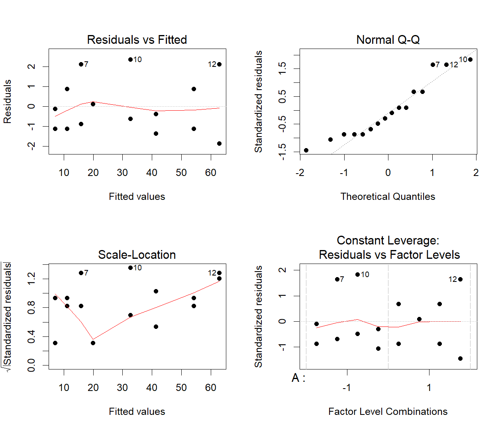
plot(interactionMeans(fit))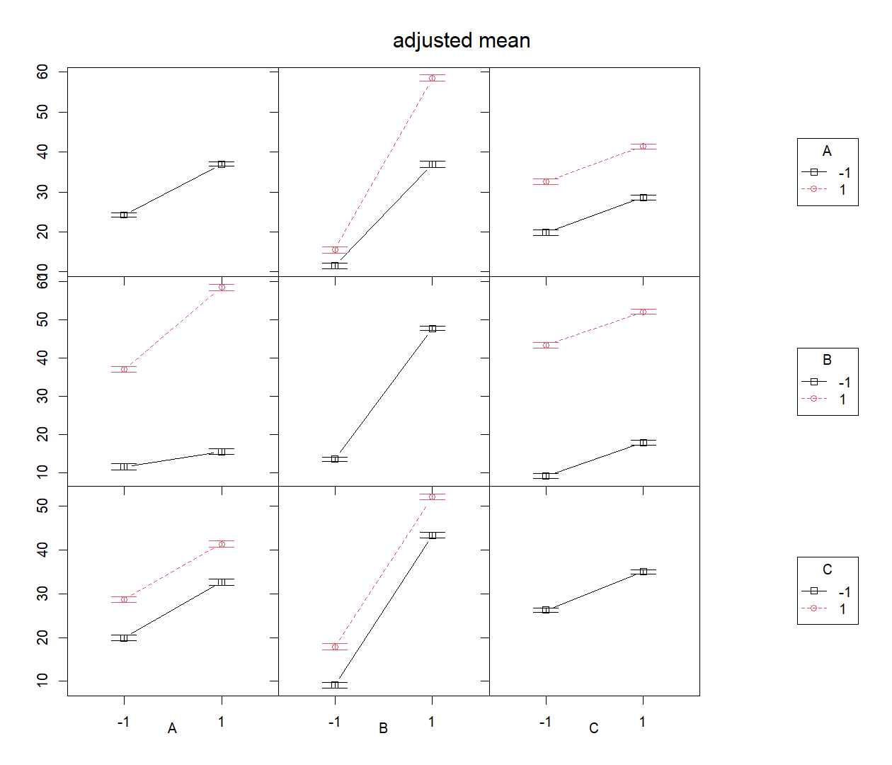
Otra forma
DesFrac <- FrF2(16,5)
DesFrac[order(DesFrac$E),]## A B C D E
## 3 -1 1 -1 -1 -1
## 4 1 1 -1 1 -1
## 6 1 1 1 -1 -1
## 10 -1 -1 -1 1 -1
## 11 1 -1 -1 -1 -1
## 12 1 -1 1 1 -1
## 13 -1 1 1 1 -1
## 14 -1 -1 1 -1 -1
## 1 1 -1 -1 1 1
## 2 1 -1 1 -1 1
## 5 1 1 1 1 1
## 7 1 1 -1 -1 1
## 8 -1 -1 1 1 1
## 9 -1 -1 -1 -1 1
## 15 -1 1 -1 1 1
## 16 -1 1 1 -1 1
## class=design, type= FrF2fractional(desig = desig,response = T,positive = T)## A B C D E y Yates
## 1 1 -1 -1 -1 -1 9 a
## 2 -1 1 -1 -1 -1 34 b
## 3 -1 -1 1 -1 -1 16 c
## 4 1 1 1 -1 -1 60 abc
## 5 -1 -1 -1 1 -1 8 d
## 6 1 1 -1 1 -1 50 abd
## 7 1 -1 1 1 -1 21 acd
## 8 -1 1 1 1 -1 44 bcd
## 9 -1 -1 -1 -1 1 18 e
## 10 1 1 -1 -1 1 52 abe
## 11 1 -1 1 -1 1 22 ace
## 12 -1 1 1 -1 1 45 bce
## 13 1 -1 -1 1 1 10 ade
## 14 -1 1 -1 1 1 30 bde
## 15 -1 -1 1 1 1 15 cde
## 16 1 1 1 1 1 63 abcdegenerators(DesFrac)## $generators
## [1] "E=ABCD"